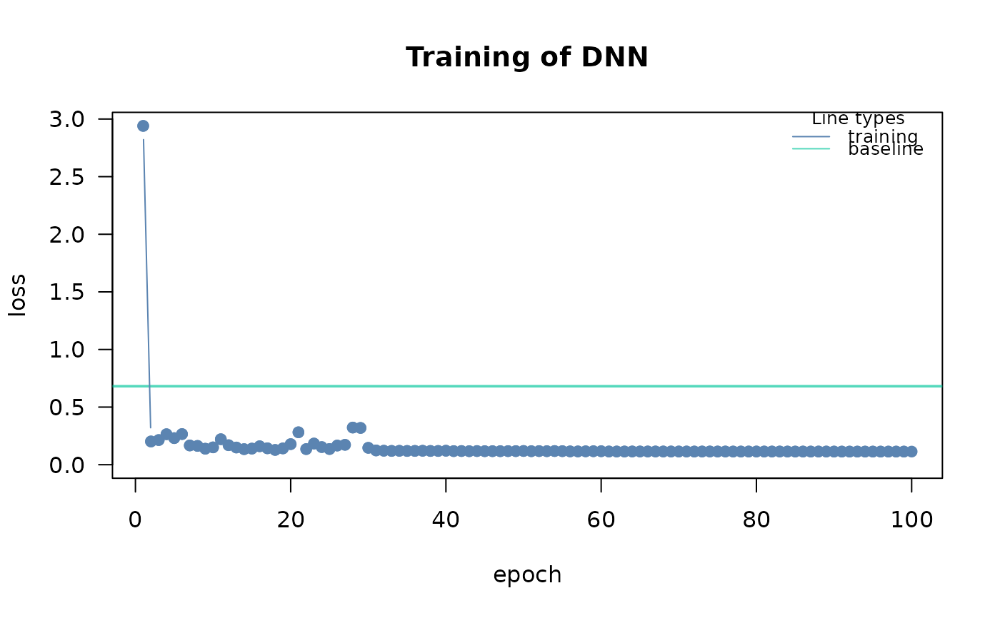

Helps create custom learning rate schedulers for dnn.
Usage
config_lr_scheduler(
type = c("lambda", "multiplicative", "reduce_on_plateau", "one_cycle", "step"),
verbose = FALSE,
...
)Value
object of class cito_lr_scheduler to give to dnn
Details
different learning rate scheduler need different variables, these functions will tell you which variables can be set:
lambda:
lr_lambdamultiplicative:
lr_multiplicativereduce_on_plateau:
lr_reduce_on_plateauone_cycle:
lr_one_cyclestep:
lr_step
Examples
# \donttest{
if(torch::torch_is_installed()){
library(cito)
# create learning rate scheduler object
scheduler <- config_lr_scheduler(type = "step",
step_size = 30,
gamma = 0.15,
verbose = TRUE)
# Build and train Network
nn.fit<- dnn(Sepal.Length~., data = datasets::iris, lr_scheduler = scheduler)
}
#> Learning rate Scheduler step
#> step_size: [30]
#> gamma: [0.15]
#> last_epoch: [-1]
#> Loss at epoch 1: 3.967707, lr: 0.01000

#> Loss at epoch 2: 0.400948, lr: 0.01000
#> Loss at epoch 3: 0.304702, lr: 0.01000
#> Loss at epoch 4: 0.426418, lr: 0.01000
#> Loss at epoch 5: 0.257543, lr: 0.01000
#> Loss at epoch 6: 0.202791, lr: 0.01000
#> Loss at epoch 7: 0.216393, lr: 0.01000
#> Loss at epoch 8: 0.208084, lr: 0.01000
#> Loss at epoch 9: 0.257573, lr: 0.01000
#> Loss at epoch 10: 0.165382, lr: 0.01000
#> Loss at epoch 11: 0.314548, lr: 0.01000
#> Loss at epoch 12: 0.187577, lr: 0.01000
#> Loss at epoch 13: 0.143104, lr: 0.01000
#> Loss at epoch 14: 0.288327, lr: 0.01000
#> Loss at epoch 15: 0.254217, lr: 0.01000
#> Loss at epoch 16: 0.145950, lr: 0.01000
#> Loss at epoch 17: 0.185506, lr: 0.01000
#> Loss at epoch 18: 0.136350, lr: 0.01000
#> Loss at epoch 19: 0.373407, lr: 0.01000
#> Loss at epoch 20: 0.151061, lr: 0.01000
#> Loss at epoch 21: 0.251382, lr: 0.01000
#> Loss at epoch 22: 0.158624, lr: 0.01000
#> Loss at epoch 23: 0.190076, lr: 0.01000
#> Loss at epoch 24: 0.274864, lr: 0.01000
#> Loss at epoch 25: 0.135205, lr: 0.01000
#> Loss at epoch 26: 0.130139, lr: 0.01000
#> Loss at epoch 27: 0.184630, lr: 0.01000
#> Loss at epoch 28: 0.169520, lr: 0.01000
#> Loss at epoch 29: 0.139601, lr: 0.01000
#> Loss at epoch 30: 0.531028, lr: 0.00150
#> Loss at epoch 31: 0.165027, lr: 0.00150
#> Loss at epoch 32: 0.119318, lr: 0.00150
#> Loss at epoch 33: 0.118574, lr: 0.00150
#> Loss at epoch 34: 0.119598, lr: 0.00150
#> Loss at epoch 35: 0.117315, lr: 0.00150
#> Loss at epoch 36: 0.119429, lr: 0.00150
#> Loss at epoch 37: 0.117377, lr: 0.00150
#> Loss at epoch 38: 0.117030, lr: 0.00150
#> Loss at epoch 39: 0.117177, lr: 0.00150
#> Loss at epoch 40: 0.116795, lr: 0.00150
#> Loss at epoch 41: 0.117777, lr: 0.00150
#> Loss at epoch 42: 0.116978, lr: 0.00150
#> Loss at epoch 43: 0.116347, lr: 0.00150
#> Loss at epoch 44: 0.114517, lr: 0.00150
#> Loss at epoch 45: 0.118782, lr: 0.00150
#> Loss at epoch 46: 0.115291, lr: 0.00150
#> Loss at epoch 47: 0.114913, lr: 0.00150
#> Loss at epoch 48: 0.113714, lr: 0.00150
#> Loss at epoch 49: 0.116051, lr: 0.00150
#> Loss at epoch 50: 0.114986, lr: 0.00150
#> Loss at epoch 51: 0.114474, lr: 0.00150
#> Loss at epoch 52: 0.114050, lr: 0.00150
#> Loss at epoch 53: 0.113563, lr: 0.00150
#> Loss at epoch 54: 0.113830, lr: 0.00150
#> Loss at epoch 55: 0.113777, lr: 0.00150
#> Loss at epoch 56: 0.116314, lr: 0.00150
#> Loss at epoch 57: 0.113477, lr: 0.00150
#> Loss at epoch 58: 0.113307, lr: 0.00150
#> Loss at epoch 59: 0.113936, lr: 0.00150
#> Loss at epoch 60: 0.113999, lr: 0.00022
#> Loss at epoch 61: 0.111759, lr: 0.00022
#> Loss at epoch 62: 0.111408, lr: 0.00022
#> Loss at epoch 63: 0.111281, lr: 0.00022
#> Loss at epoch 64: 0.111209, lr: 0.00022
#> Loss at epoch 65: 0.111248, lr: 0.00022
#> Loss at epoch 66: 0.111262, lr: 0.00022
#> Loss at epoch 67: 0.111358, lr: 0.00022
#> Loss at epoch 68: 0.111266, lr: 0.00022
#> Loss at epoch 69: 0.110972, lr: 0.00022
#> Loss at epoch 70: 0.110985, lr: 0.00022
#> Loss at epoch 71: 0.111304, lr: 0.00022
#> Loss at epoch 72: 0.110879, lr: 0.00022
#> Loss at epoch 73: 0.110794, lr: 0.00022
#> Loss at epoch 74: 0.111128, lr: 0.00022
#> Loss at epoch 75: 0.110814, lr: 0.00022
#> Loss at epoch 76: 0.111026, lr: 0.00022
#> Loss at epoch 77: 0.110870, lr: 0.00022
#> Loss at epoch 78: 0.110712, lr: 0.00022
#> Loss at epoch 79: 0.110735, lr: 0.00022
#> Loss at epoch 80: 0.110872, lr: 0.00022
#> Loss at epoch 81: 0.110915, lr: 0.00022
#> Loss at epoch 82: 0.110741, lr: 0.00022
#> Loss at epoch 83: 0.110471, lr: 0.00022
#> Loss at epoch 84: 0.110624, lr: 0.00022
#> Loss at epoch 85: 0.110757, lr: 0.00022
#> Loss at epoch 86: 0.110521, lr: 0.00022
#> Loss at epoch 87: 0.110795, lr: 0.00022
#> Loss at epoch 88: 0.110666, lr: 0.00022
#> Loss at epoch 89: 0.110695, lr: 0.00022
#> Loss at epoch 90: 0.110435, lr: 0.00003
#> Loss at epoch 91: 0.110169, lr: 0.00003
#> Loss at epoch 92: 0.110172, lr: 0.00003
#> Loss at epoch 93: 0.110166, lr: 0.00003
#> Loss at epoch 94: 0.110160, lr: 0.00003
#> Loss at epoch 95: 0.110145, lr: 0.00003
#> Loss at epoch 96: 0.110179, lr: 0.00003
#> Loss at epoch 97: 0.110173, lr: 0.00003
#> Loss at epoch 98: 0.110140, lr: 0.00003
#> Loss at epoch 99: 0.110155, lr: 0.00003
#> Loss at epoch 100: 0.110168, lr: 0.00003
# }